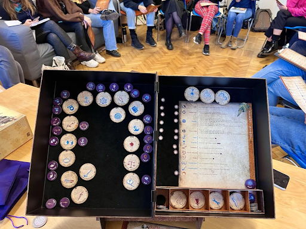
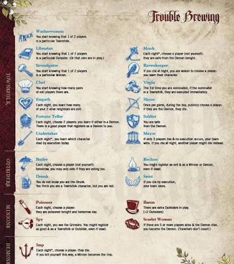
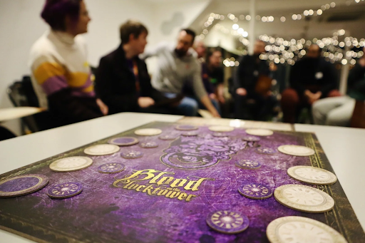

Blood on the Clocktower boasts a wide variety of different roles, so many that not all can be fit into a single script. Take a look at the many different roles and abilities from the “Trouble Brewing” script
While the strategy in this game runs deep, and can often be intimidating to newcomers, the actual rules are quite simple. While the best strategy is never the same for each game, here are some fun tricks that might come in handy.
